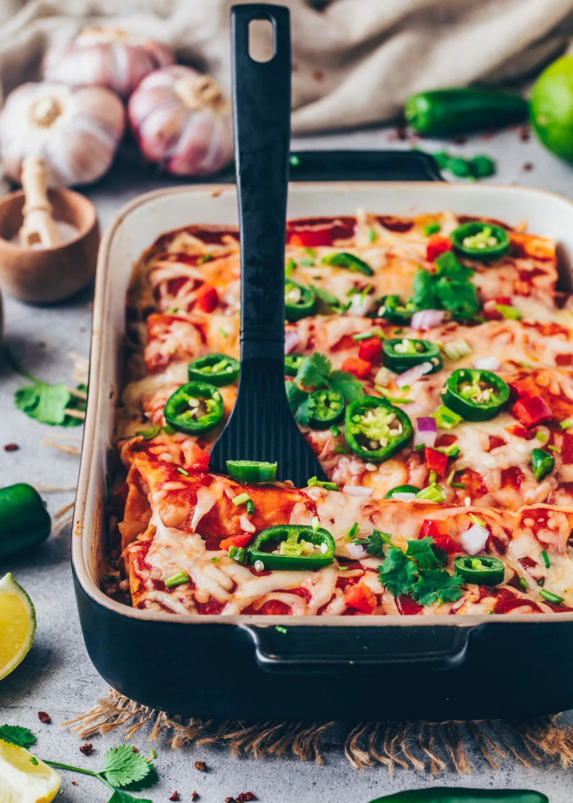

Vegan Enchiladas with Beans

Description
These amazing Vegan Enchiladas are stuffed with Mexican veggies, including beans, corn, bell pepper, and topped with tomato sauce and dairy-free cheese - It''s an easy veggie enchilada recipe that is healthy, protein-rich, delicious and can be made with gluten-free tortillas. Perfect for meal prep to make ahead and freeze, so you'll have a satisfying homemade lunch or dinner in minutes!
Ingredients
For the vegetable filling
- 1-2 tbsp vegetable oil for frying
- 2 onions diced
- 4 garlic cloves minced
- 1 large carrot diced
- ½ red bell pepper diced
- ½ yellow bell pepper diced
- 1 14 oz can (400 g) beans kidney beans or black beans or a mix of both
- 1 cup (150 g) corn canned, rinsed & drained or frozen, thawed
- 7 oz (200 g) cooked rice or boiled potatoes, lentils or soy mince
- 1 14 oz can chopped tomatoes
- 1 tbsp red paprika powder
- salt & pepper to taste
- pinch of chili or chopped jalapeño to taste
For gratinating
- 1 14 oz can (400 g) tomato sauce
- 1 ½ cup (150 g) dairy-free cheese shreds
Further ingredients
- 11 small tortillas or 6 large ones
To garnish (optional)
- scallions
- coriander or parsley
- jalapeños
- limes
Steps
- Cook the rice according to the package instructions. Clean the vegetables and cut them into small pieces
- Heat the oil in a large non-stick pan (or skillet). Add the onions and sauté for about 2-3 minutes. Then add the garlic, carrots, yellow and red bell peppers and cook for further 4-5 minutes, or until tender.
- Drain and rinse the canned beans. Then place in a large bowl and mash roughly with a potato masher (or fork) but do not purée.
- Add the mashed beans along with the corn, cooked rice, and chopped tomatoes to the vegetables in the pan. Season with red paprika powder, salt, pepper and a pinch of chili to taste.
- Preheat the oven to 355ºF (180°C). Cover the bottom of your casserole dish with some tomato sauce.
- Place 3-4 tablespoons of the veggie filling on top of each tortilla and roll them up tightly. Arrange the stuffed enchiladas with the seam-side down next to each other in the prepared casserole dish. Then, spread the remaining tomato sauce over the enchiladas and sprinkle with diary-free cheese shreds as desired.
- Bake the enchiladas at 390°F (200°C) for approx. 20-25 minutes.
- Sprinkle with fresh scallions, jalapeños, and coriander or parsley and drizzle with a squeeze of lime juice for freshness.
Recipe by https://biancazapatka.com/en/vegan-enchiladas/